Halo, Detektif Digital!
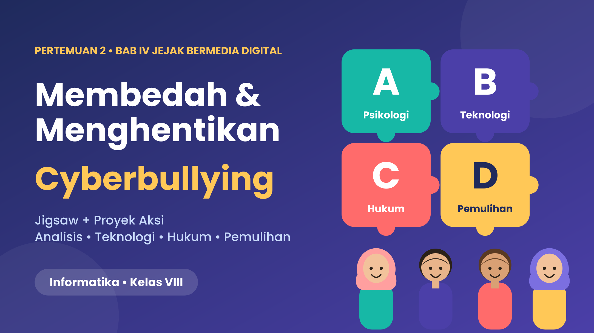
Minggu lalu kamu sudah tahu apa itu cyberbullying. Sekarang kita naik level: mengapa orang berani jahat di dunia maya, bagaimana menyebarnya, apa aturannya, dan apa yang bisa kamu lakukan.
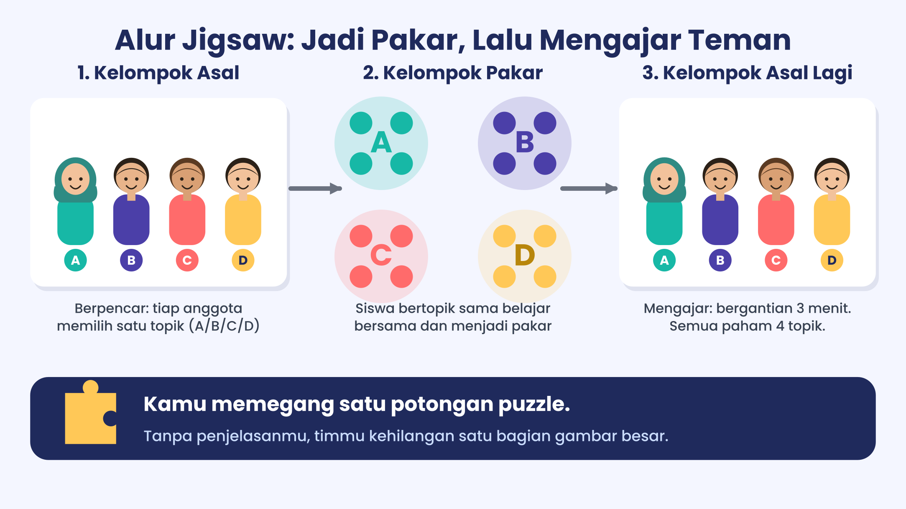
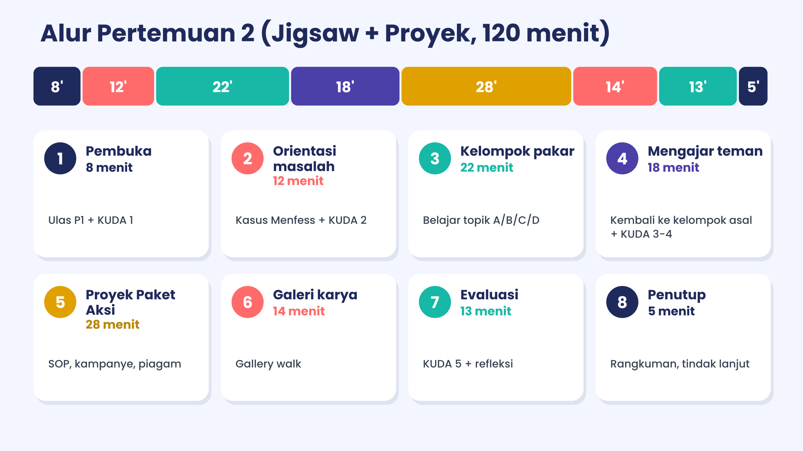
Kasus: Nadia dan Akun Menfess
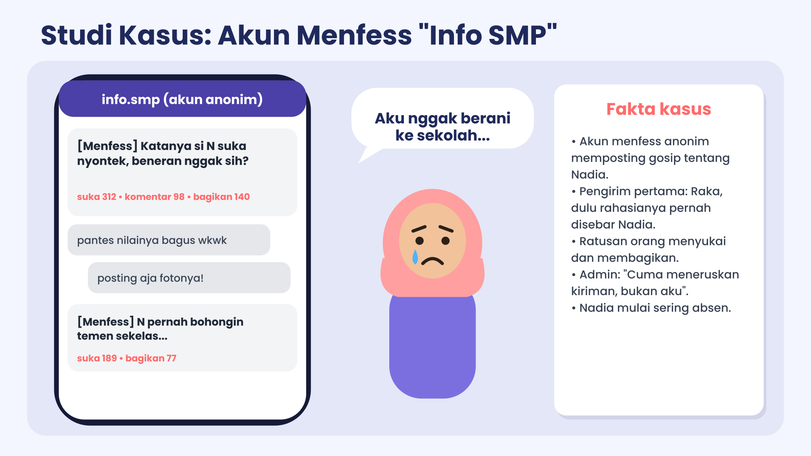
Di SMP Harapan Bangsa (sekolah fiktif) ada akun menfess anonim bernama @info.smp. Siswa biasa mengirim pesan rahasia lewat akun itu dan admin akan mengunggahnya.
Suatu malam, akun itu mengunggah: "Katanya si N suka nyontek, beneran nggak sih?" Semua orang tahu "N" adalah Nadia dari kelas 8C. Dalam dua jam unggahan itu mendapat 312 suka, 98 komentar, dan dibagikan 140 kali. Komentarnya: "pantes nilainya bagus wkwk", "posting aja fotonya!"
Keesokan harinya muncul kiriman kedua: "N pernah bohongin temen sekelas." Pengirim pertama ternyata Raka. Ia kesal karena beberapa bulan lalu Nadia pernah menyebarkan rahasianya. Raka hanya berniat "membalas sekali saja".
Ketika ditegur, admin menjawab: "Aku cuma meneruskan kiriman, bukan aku yang nulis." Beberapa siswa menyimpan tangkapan layar untuk dibagikan lagi di grup lain. Dimas merasa tidak enak, tetapi memilih diam. Sinta ingin menolong, tetapi takut ikut diserang.
Seminggu kemudian Nadia mulai sering absen, nilainya turun, dan ia menolak bercerita kepada orang tuanya.
- Siapa saja yang berperan dalam kasus ini dan apa peran masing-masing (gunakan lingkaran perundungan)?
- Faktor apa yang membuat orang berani menulis dan membagikan kiriman itu?
- Apakah alasan admin ("cuma meneruskan") dapat dibenarkan? Jelaskan.
- Apa yang sebaiknya dilakukan Dimas dan Sinta? Apa yang harus dilakukan sekolah?
Bab Pakar
Pilih huruf topikmu. Kamu boleh membaca semuanya untuk belajar ulang di rumah.
Kamu akan menjadi pakar tentang siapa saja yang terlibat dalam perundungan dan mengapa orang berani berbuat jahat di dunia maya.
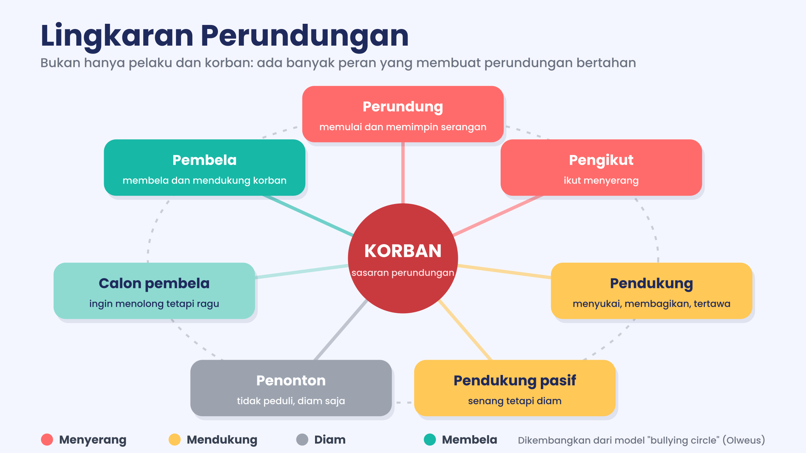
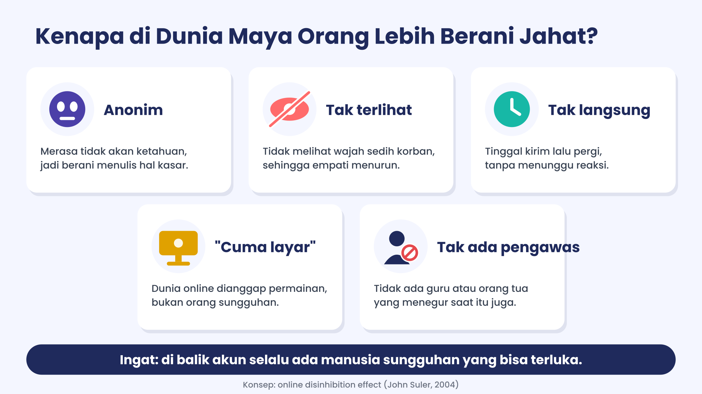
Yang perlu kamu tahu
- Lingkaran perundungan (dikembangkan dari model Olweus) menunjukkan 7 peran di sekitar korban: perundung, pengikut, pendukung, pendukung pasif, penonton, calon pembela, dan pembela.
- Perundungan bertahan bukan hanya karena perundungnya, tetapi karena banyak orang diam atau ikut-ikutan. Menyukai atau membagikan sudah berarti mendukung.
- Efek disinhibisi online (John Suler, 2004) menjelaskan lima faktor yang membuat orang lebih berani: anonim, tak terlihat, tak langsung, "cuma layar", dan tak ada pengawas.
- Kurangnya empati di dunia maya bukan alasan pembenaran. Orang bisa dilatih untuk membayangkan perasaan korban sebelum menekan tombol kirim.
- Dampak pada korban: cemas, malu, sulit tidur, menarik diri, nilai turun, enggan ke sekolah. Dampak pada pelaku dan saksi: rasa bersalah, hukuman, dijauhi, dan terbiasa menyakiti.
- Ada 7 peran, bukan hanya korban dan pelaku.
- 5 faktor disinhibisi: anonim, tak terlihat, tak langsung, cuma layar, tak ada pengawas.
- Diam dan menyukai juga memberi tenaga bagi perundungan.
Kamu akan menjadi pakar tentang bagaimana teknologi membuat perundungan menyebar cepat dan bagaimana mengamankan bukti yang sah.
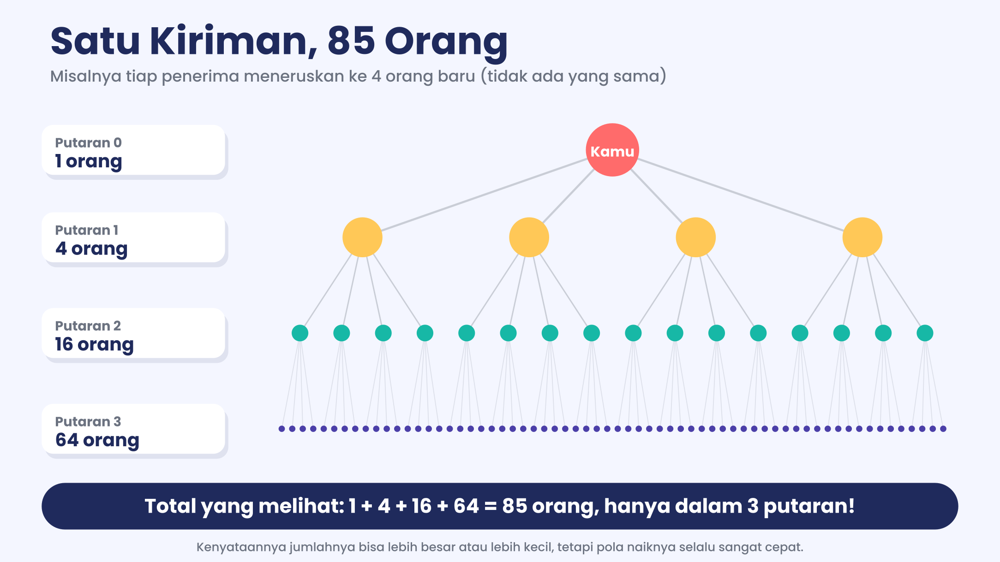
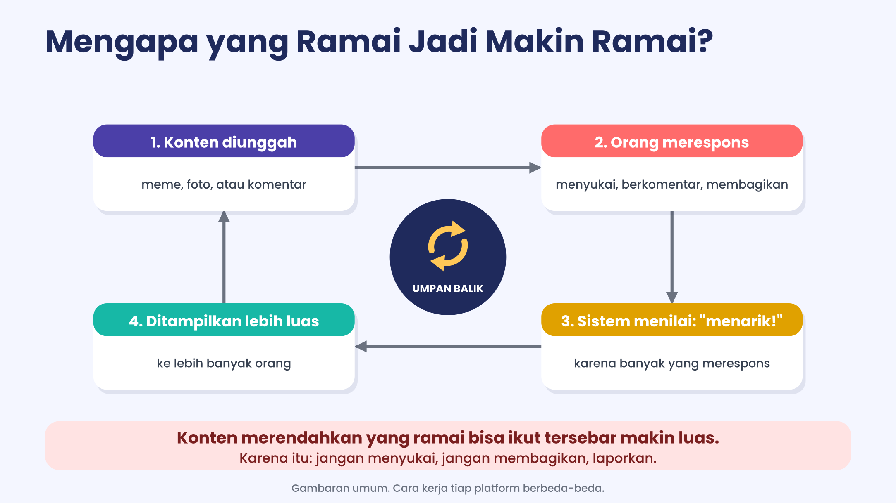
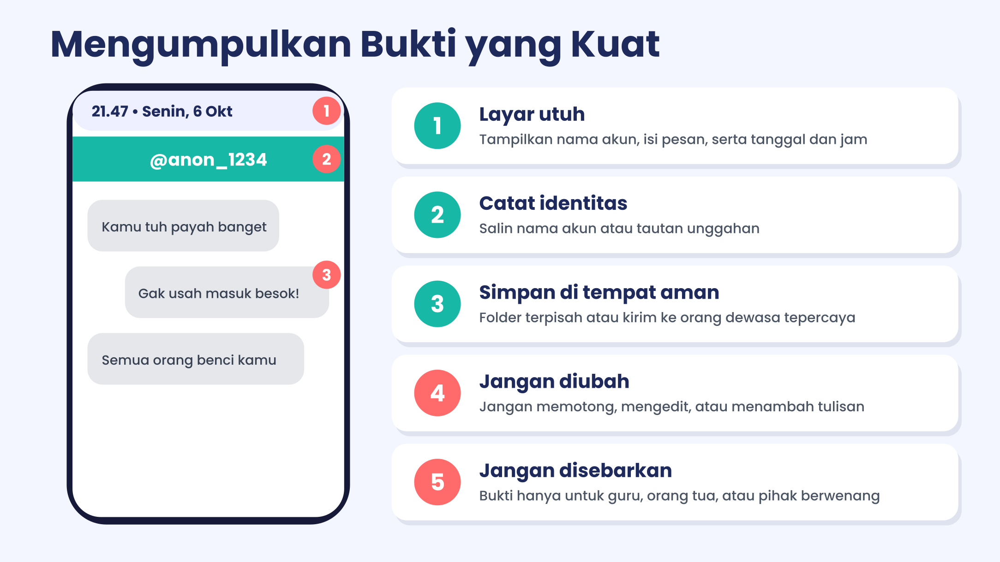
Yang perlu kamu tahu
- Penyebaran berlipat. Jika tiap penerima meneruskan ke 4 orang baru: putaran 1 = 4, putaran 2 = 16, putaran 3 = 64. Total yang melihat 1 + 4 + 16 + 64 = 85 orang hanya dalam 3 putaran. Rumus umum: 4ⁿ.
- Umpan balik (feedback loop). Pada banyak platform, konten yang direspons ramai cenderung ditampilkan kepada lebih banyak orang. Akibatnya konten merendahkan yang ramai ikut tersebar makin luas. Cara kerja tiap platform berbeda, ini gambaran umum.
- Jejak digital membuat unggahan sulit dihapus total: ada tangkapan layar, unggahan ulang, dan salinan di perangkat orang lain.
- Bukti yang kuat: tangkapan layar yang utuh (nama akun, isi pesan, tanggal dan jam), catat tautan atau nama akun, simpan di tempat aman, jangan diedit, dan jangan disebarkan ulang. Bukti ditunjukkan hanya kepada guru, orang tua, TPPK, atau pihak berwenang.
- Tombol yang bisa digunakan: laporkan (report), blokir, bisukan (mute), atur privasi akun. Pelajari menu ini di aplikasi yang kamu pakai.
- Penyebaran itu berlipat (pangkat), bukan bertambah satu-satu.
- Konten ramai bisa makin ramai (umpan balik).
- Bukti: utuh, aman, tidak diedit, tidak disebar.
Kamu akan menjadi pakar tentang aturan yang melindungi kita. Ingat, ini pengenalan dan bukan nasihat hukum.
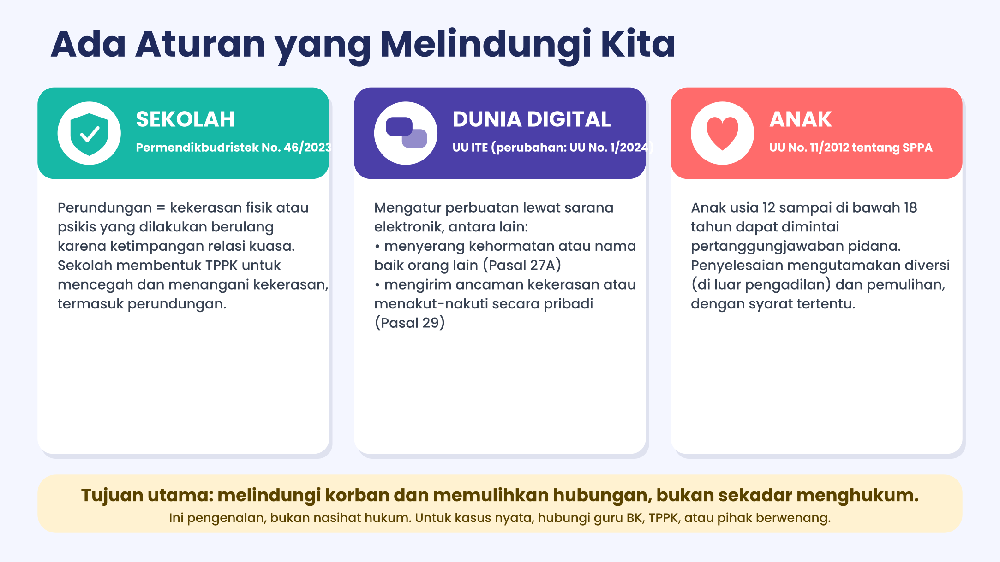
Yang perlu kamu tahu
- Permendikbudristek No. 46 Tahun 2023 tentang Pencegahan dan Penanganan Kekerasan di Lingkungan Satuan Pendidikan. Perundungan dipahami sebagai kekerasan fisik atau psikis yang dilakukan berulang karena ketimpangan relasi kuasa. Sekolah membentuk TPPK (Tim Pencegahan dan Penanganan Kekerasan).
- UU ITE (diubah dengan UU No. 1 Tahun 2024) mengatur perbuatan melalui sarana elektronik, antara lain menyerang kehormatan atau nama baik orang lain (Pasal 27A) dan mengirim ancaman kekerasan atau menakut-nakuti yang ditujukan langsung kepada korban (Pasal 29).
- UU No. 11 Tahun 2012 tentang Sistem Peradilan Pidana Anak (SPPA): anak berusia 12 sampai di bawah 18 tahun dapat dimintai pertanggungjawaban, dengan penyelesaian yang mengutamakan diversi (di luar pengadilan) dan pendekatan restoratif, dengan syarat tertentu.
- Pesan utamanya: aturan dibuat untuk melindungi korban dan memulihkan, bukan sekadar menghukum. Tanggung jawab bisa tetap ada walaupun pelakunya masih di bawah umur.
- Mengunggah foto atau data pribadi orang lain tanpa izin dan menyebarkan hinaan dapat menimbulkan masalah serius. Bila ragu, tanyakan dahulu kepada guru atau orang tua.
- Tiga lapis aturan: sekolah (Permen 46/2023), dunia digital (UU ITE), anak (UU SPPA).
- Perundungan: berulang dan ada ketimpangan relasi kuasa.
- Tujuannya melindungi dan memulihkan. Ini bukan nasihat hukum.
Kamu akan menjadi pakar tentang apa yang bisa dilakukan saksi dan bagaimana pemulihan setelah perundungan.
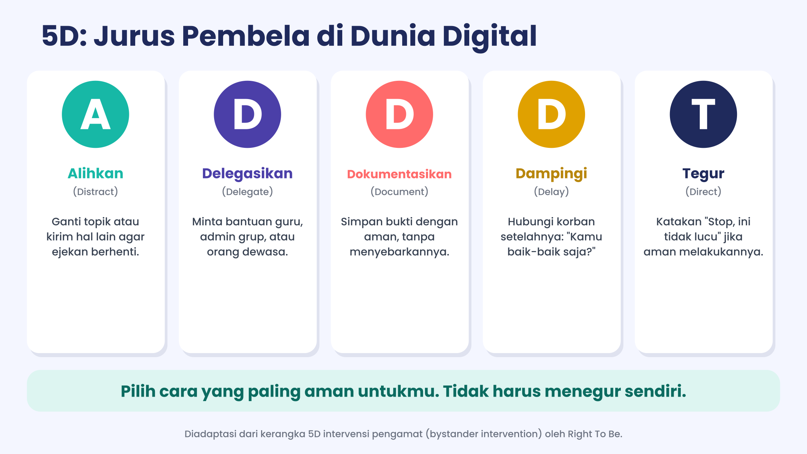
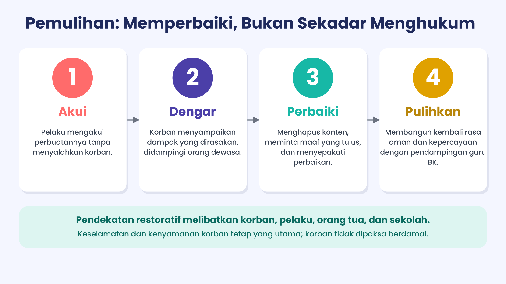
Yang perlu kamu tahu
- 5D intervensi pengamat (diadaptasi dari Right To Be): Alihkan (ganti topik), Delegasikan (minta bantuan orang dewasa atau admin), Dokumentasikan (simpan bukti aman), Dampingi (hubungi korban setelahnya), Tegur (katakan "stop" jika aman).
- Tidak harus menegur sendirian. Keselamatan diri juga penting. Melapor dan mendampingi adalah dua pilihan yang hampir selalu aman.
- Pemulihan restoratif punya empat langkah: Akui (pelaku mengakui perbuatan), Dengar (korban menyampaikan dampaknya), Perbaiki (hapus konten, minta maaf tulus, sepakati perbaikan), Pulihkan (bangun rasa aman, pendampingan guru BK).
- Korban tidak dipaksa berdamai. Keselamatan dan kenyamanan korban yang utama, dan proses melibatkan orang dewasa.
- Pencegahan dimulai dari kelas: piagam grup digital, kebiasaan berpikir sebelum mengirim, dan keberanian menyapa teman yang mulai menarik diri.
- 5D: Alihkan, Delegasikan, Dokumentasikan, Dampingi, Tegur.
- Pemulihan: Akui, Dengar, Perbaiki, Pulihkan.
- Pilih tindakan yang aman, korban tidak dipaksa berdamai.
Proyek: Paket Aksi Aman
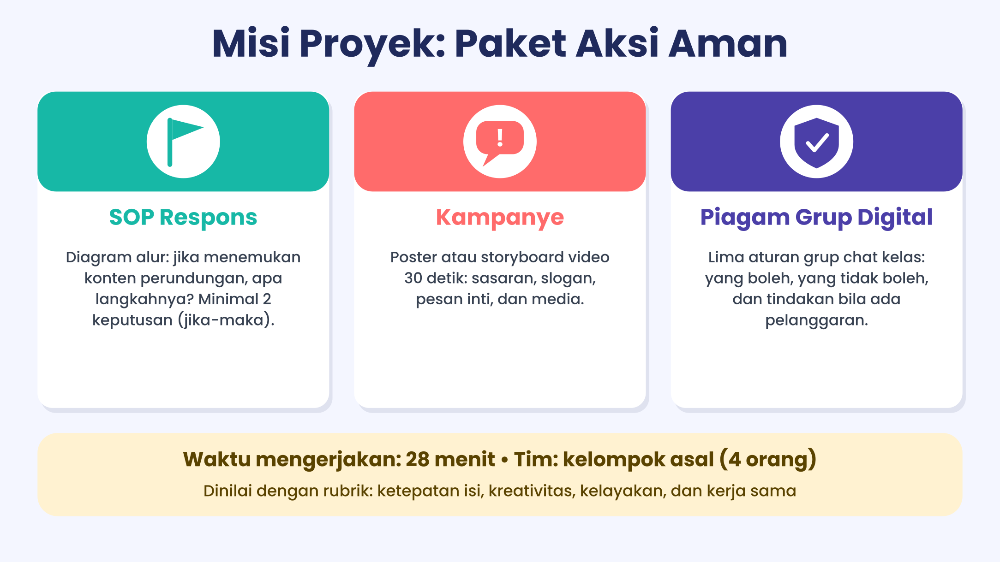
Diagram alur menuliskan langkah berurutan dan bercabang pada keputusan. Itu sama dengan "jika ... maka ... jika tidak ..." dalam pemrograman.
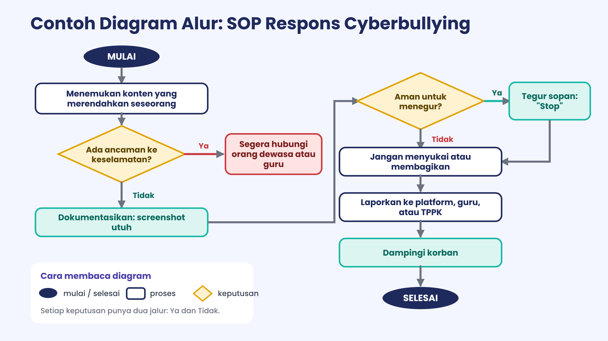
- Mulai dari keselamatan: ada ancaman? Jika ya, hubungi orang dewasa.
- Setiap belah ketupat punya dua jalur: Ya dan Tidak.
- Jangan menyebarkan ulang atau mempermalukan.
- Tutup dengan pendampingan korban.
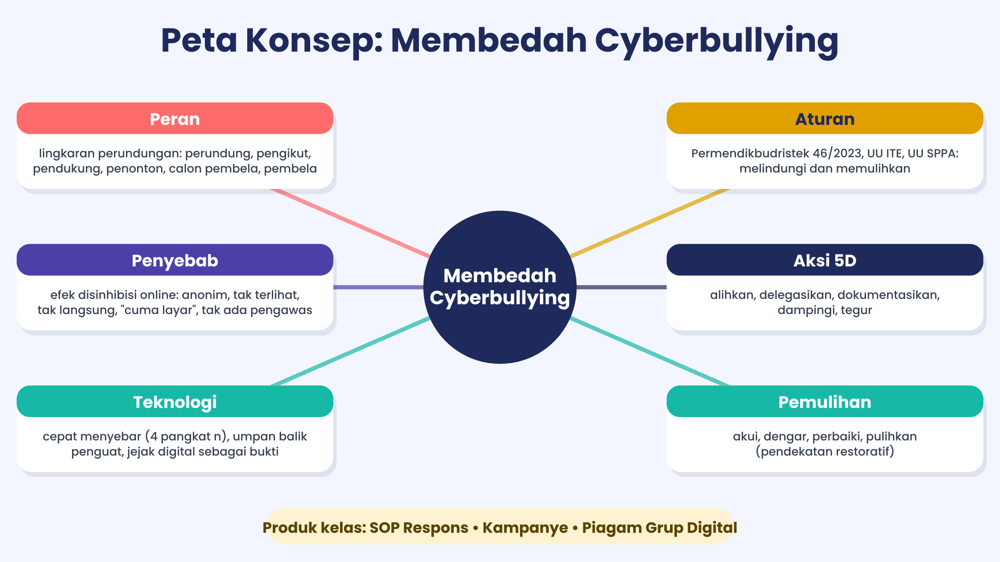
Uji Pemahamanmu
Klik jawabanmu. Hijau benar, merah salah.
KUDA: hitung penyebaran
Kalau Kamu atau Temanmu Mengalami Perundungan
Catatan: materi aturan hanya pengenalan, bukan nasihat hukum.